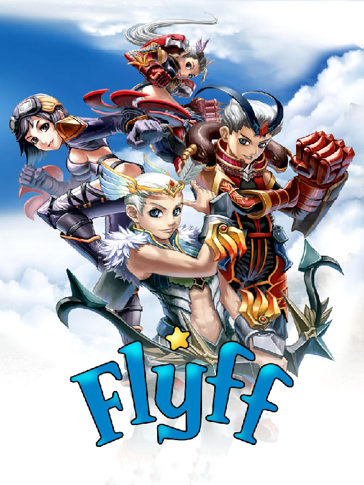

Flyff
Flyff
Details
|  | |
| Spielzeit | Nicht gespielt |
| Letzte Aktivität | Nie |
| Hinzugefügt | 05.12.2022 19:57:19 |
| Modifiziert | 09.12.2022 0:41:59 |
| Fertigstellungsstatus | Not Played |
| Bibliothek | Playnite |
| Quelle | |
| Plattform | Adobe Flash |
| Veröffentlichungsdatum | 25.12.2005 |
| Community Bewertungen | 46 |
| Kritiker Punkte | |
| Benutzerwertung | |
| Genre | 🐎 RPG |
| Entwickler | Aeonsoft Gala Lab Corp. |
| Verleger | |
| Eigenschaft | Massively Multiplayer Online (MMO) Multiplayer |
| Links | Official Website Wikipedia Wikia |
| Tag | |
Beschreibung
Flyff (short for Fly for Fun) is a fantasy MMORPG by Korean development company Gala Lab (formerly Aeonsoft & nFlavor). Flyff is a fairly typical party-oriented grinding game where no character can do everything; efficient play requires working in groups to level up by killing monsters, or Masquerpets. Its main distinctiveness lies in its flying system: flying is the normal method of transportation for characters above level 20.
Flyff is hosted in 13 countries and 10 languages and is played by over 30 million people.
GAMEPLAY:
Players control an avatar that spends most of its active time fighting and most of its inactive time running a shop. Character classes are chosen at level 15 and sub-classes at levels 60 and 130, referred to as the first, second, and third job changes. The job changes are obligatory—when a character reaches the requisite level, experience gain stops until the completion of one of the job quests. At level 120, the character can become a Master, returning to level 60 with enhanced powers and able to work its way back up to level 121 and become a Hero. As of version 17, Heroes may select a third job class at level 130 and level up to the current cap of 150.
Levels are gained based on experience, which can be acquired by killing Masquerpets and by performing quests. Quests generally involve killing specific Masquerpets and collecting the different quest objects they drop; a typical early quest is that of "Party of Is," with the requirement of collecting 7 Chupims through killing Pukepukes.
At each level, the character receives skill points that can be invested in skills available to its job(s). There are two types of skills: those used for attacking and those used for protection and/or enhancement. Skills may have cool-down times and may cause status effects, with confusion, stun, and bleed among the most common effect. It is not possible to acquire maximum levels in all available skills until becoming a level 60 Master.
Characters can be improved by acquiring objects such as improved equipment. Masquerpets drop equipment, the in-game currency penya, consumable items such as food and potions, and quest objects, or players can purchase equipment from other players note this is usually extremely expensive because of the high quality gear that can be acquired this way. These can all be traded between players; Flyff gameplay involves large amounts of buying and selling in order to collect desired equipment. Most equipment items have minimum levels at which they can be used.
Combat
Flyff features melee, ranged and magic combat, with different skills available to different classes. Health points, fight points, and magic power bars are able to be replenished through food, vital drinks and mana refreshers; some classes depend on assists to heal them with magic.
PvP
Player versus player (PvP) combat is allowed on all servers without penalty in the form of dueling. Both players must be over level 15, and within 30 levels of each other, then they must confirm the duel first unless they are within the PvP Arena, a free-for-all environment found on all servers. Player killing is allowed only on the Yetti server and carries a high penalty.
SOCIAL SYSTEMS:
Lord System
Introduced in version 12, the Lord system allows eligible players to be voted as the Lord of their server for 2 weeks. Players must have obtained Hero or Master status to qualify as a Lord candidate. While a Lord, a player may introduce a number of events on the server. Lords are taxed between 0 to 20% on all NPC purchases and returns and are given a portion of all player taxes. 10% of eligible voters must participate in the Lord vote for a Lord to be chosen. To vote for a candidate, a player must be at least level 60 and must have logged in to the game within the last 30 days. Each player may only vote for one candidate per election.
Party System
Players who join a party gain increased experience and loot. A lone player does not benefit from or harm a party. A party starts as a Regular Party, in which experience is distributed evenly among party members in the same location. At level 10, the party becomes Advanced, at which point experience can be distributed to players based on their amount of damage done. An Advanced Party may have up to 8 players; having this many players in a party increases player experience with each monster killed during training.
Guild System
Guilds allow players to socialize; players within a guild can chat with each other and many in-game activities are guild-based. Guilds have a hierarchical chain of command, consisting of the Master/Leader, Kingpins, Captains, Supporters, and Rookies. The guild master may change the permissions for guild members, allowing members to withdraw items or money from the guild bank, rank-up or de-rank other members, and be paid daily. Guilds are able to choose an emblem and cloak to represent themselves and have the use of a warehouse. When a guild reaches the appropriate guild level, increased by supporting the guild through quest items and Penya, the guild master may create guild cloaks at a cost that sport the guild's symbol. A large amount of Flyff end-game content is guild-related.
Guild Siege
This event, held on Saturday in channel 1 of each server, allows guilds to compete in a free-for-all environment. A total of 8 Guilds may enter, and each Guild may have 10 players. To compete, the Guild leader must place a bid; the 8 highest bidders compete.
Clockworks War
The Clockworks War is a guild dungeon that guilds of any level may enter a single time. If the guild fails against the dungeon boss, its players may reattempt to win as many times as necessary for a time period of one hour. Only one guild is permitted inside the Clockworks Arena at a time.
Couple System
The couple system, implemented in Version 13, allows a marriage-style connection between two characters. Characters who become a couple are granted special buffs and skills and receive gifts with new couple level gained.
Mentor/Pupil System
The Mentor/Pupil system, implemented in Version 15, allows any player level 91 or above to take on any character who has not completed their second Job Change as a pupil after completing the mentor qualification quest. This Mentor/Pupil bond provides a special bonus to experience gained by both mentor and pupil while both characters are logged on to the same server. Additionally, upon the pupil reaching certain level marks, the mentor gains 'Mentor Points'; as the mentor gains more of these points, additional pupils may be taken on, to a maximum of 3 pupils when over 100 Mentor Points are gained. These additional pupils grant increases to the experience bonus of the mentor; the other pupils' experience bonus' remain unchanged.
While no action apart from the initial bonding is necessary within the Mentor/Pupil relationship, mentors are encouraged to help their pupils with advice, quests, and/or occasional gifts. If at any time either pupil or mentor becomes dissatisfied, the player may cancel the bond. The Mentor Points of a mentor who loses all pupils returns to 0 and must be regained through new Mentor/Pupil bonds.
OTHER GAME SYSTEMS:
Events
Events involving rare drops and extra experience are held almost every week by the gamemaster team. Maintenance is held every Tuesday evening (gPotato) and Thursday noon (FlyFF PH).
Collector System
Re-Introduced in version 11, the Collector System allows players to collect rare and unique game items through the use of a Collectors.
Private Shops
Players can open private shops, in which held items can be sold at any price. Other players can enter these shops and purchase the items within, with the purchase money transferred to the shop owner's inventory.
Raising Pets
Players may keep seven types of Raised Pets, which start out as eggs that may be dropped by any Masquerpet level 20 and above. An egg can be hatched by the Pet Tamer NPC after feeding the egg 50,000 pet feed. To evolve a pet, players must complete quests given by the Pet Tamer. Pets must also be fed to keep them alive. Each Raised Pet has five levels and three appearances. A player accompanied by a pet receives additional stat points based on the type of pet.
Elements
Monsters are generally associated with a particular in-game elements, of which there are five. Each element is vulnerable to one element and resistant to another. Weapons and armor can be "elemented", conferring advantages against monsters of some types and disadvantages against others; many aggressive spells are also elemented.
Cash Shop
Flyff uses a micropayment system through which users can obtain 'Game Cash'. Game Cash can be exchanged for premium items not otherwise available in the game, including clothing, potions, different kinds of scrolls and pick-up pets.
DEVELOPMENT:
In December 2002, Aeonsoft developed the first provisional prototype of the game, called Clockworks Ltd. In September 2003, the company changed the game's name to Flyff, and began its first closed beta in Korea. In July 2004, it won the Game of the Month award from the Korean Ministry of Culture, Sports and Tourism. Over the next year, it was launched in three more countries: China, Taiwan, and Thailand. In October 2005, the US received the closed beta, which ran for a month before Flyff was commercially launched in December.
TECHNICAL DEVELOPMENT:
Game mechanics
Aeonsoft employs its own in-house core technology. The world object engine uses load balancing middle-ware, multi-thread and parallel game logic processing. The 3D flying engine uses faster process with vector and collide mesh and 3D space divided by Octree System. Its network sync engine utilities packet optimization by object move estimation, client-side sync calculation, and object move calibration processes.
Flyff is hosted in 13 countries and 10 languages and is played by over 30 million people.
GAMEPLAY:
Players control an avatar that spends most of its active time fighting and most of its inactive time running a shop. Character classes are chosen at level 15 and sub-classes at levels 60 and 130, referred to as the first, second, and third job changes. The job changes are obligatory—when a character reaches the requisite level, experience gain stops until the completion of one of the job quests. At level 120, the character can become a Master, returning to level 60 with enhanced powers and able to work its way back up to level 121 and become a Hero. As of version 17, Heroes may select a third job class at level 130 and level up to the current cap of 150.
Levels are gained based on experience, which can be acquired by killing Masquerpets and by performing quests. Quests generally involve killing specific Masquerpets and collecting the different quest objects they drop; a typical early quest is that of "Party of Is," with the requirement of collecting 7 Chupims through killing Pukepukes.
At each level, the character receives skill points that can be invested in skills available to its job(s). There are two types of skills: those used for attacking and those used for protection and/or enhancement. Skills may have cool-down times and may cause status effects, with confusion, stun, and bleed among the most common effect. It is not possible to acquire maximum levels in all available skills until becoming a level 60 Master.
Characters can be improved by acquiring objects such as improved equipment. Masquerpets drop equipment, the in-game currency penya, consumable items such as food and potions, and quest objects, or players can purchase equipment from other players note this is usually extremely expensive because of the high quality gear that can be acquired this way. These can all be traded between players; Flyff gameplay involves large amounts of buying and selling in order to collect desired equipment. Most equipment items have minimum levels at which they can be used.
Combat
Flyff features melee, ranged and magic combat, with different skills available to different classes. Health points, fight points, and magic power bars are able to be replenished through food, vital drinks and mana refreshers; some classes depend on assists to heal them with magic.
PvP
Player versus player (PvP) combat is allowed on all servers without penalty in the form of dueling. Both players must be over level 15, and within 30 levels of each other, then they must confirm the duel first unless they are within the PvP Arena, a free-for-all environment found on all servers. Player killing is allowed only on the Yetti server and carries a high penalty.
SOCIAL SYSTEMS:
Lord System
Introduced in version 12, the Lord system allows eligible players to be voted as the Lord of their server for 2 weeks. Players must have obtained Hero or Master status to qualify as a Lord candidate. While a Lord, a player may introduce a number of events on the server. Lords are taxed between 0 to 20% on all NPC purchases and returns and are given a portion of all player taxes. 10% of eligible voters must participate in the Lord vote for a Lord to be chosen. To vote for a candidate, a player must be at least level 60 and must have logged in to the game within the last 30 days. Each player may only vote for one candidate per election.
Party System
Players who join a party gain increased experience and loot. A lone player does not benefit from or harm a party. A party starts as a Regular Party, in which experience is distributed evenly among party members in the same location. At level 10, the party becomes Advanced, at which point experience can be distributed to players based on their amount of damage done. An Advanced Party may have up to 8 players; having this many players in a party increases player experience with each monster killed during training.
Guild System
Guilds allow players to socialize; players within a guild can chat with each other and many in-game activities are guild-based. Guilds have a hierarchical chain of command, consisting of the Master/Leader, Kingpins, Captains, Supporters, and Rookies. The guild master may change the permissions for guild members, allowing members to withdraw items or money from the guild bank, rank-up or de-rank other members, and be paid daily. Guilds are able to choose an emblem and cloak to represent themselves and have the use of a warehouse. When a guild reaches the appropriate guild level, increased by supporting the guild through quest items and Penya, the guild master may create guild cloaks at a cost that sport the guild's symbol. A large amount of Flyff end-game content is guild-related.
Guild Siege
This event, held on Saturday in channel 1 of each server, allows guilds to compete in a free-for-all environment. A total of 8 Guilds may enter, and each Guild may have 10 players. To compete, the Guild leader must place a bid; the 8 highest bidders compete.
Clockworks War
The Clockworks War is a guild dungeon that guilds of any level may enter a single time. If the guild fails against the dungeon boss, its players may reattempt to win as many times as necessary for a time period of one hour. Only one guild is permitted inside the Clockworks Arena at a time.
Couple System
The couple system, implemented in Version 13, allows a marriage-style connection between two characters. Characters who become a couple are granted special buffs and skills and receive gifts with new couple level gained.
Mentor/Pupil System
The Mentor/Pupil system, implemented in Version 15, allows any player level 91 or above to take on any character who has not completed their second Job Change as a pupil after completing the mentor qualification quest. This Mentor/Pupil bond provides a special bonus to experience gained by both mentor and pupil while both characters are logged on to the same server. Additionally, upon the pupil reaching certain level marks, the mentor gains 'Mentor Points'; as the mentor gains more of these points, additional pupils may be taken on, to a maximum of 3 pupils when over 100 Mentor Points are gained. These additional pupils grant increases to the experience bonus of the mentor; the other pupils' experience bonus' remain unchanged.
While no action apart from the initial bonding is necessary within the Mentor/Pupil relationship, mentors are encouraged to help their pupils with advice, quests, and/or occasional gifts. If at any time either pupil or mentor becomes dissatisfied, the player may cancel the bond. The Mentor Points of a mentor who loses all pupils returns to 0 and must be regained through new Mentor/Pupil bonds.
OTHER GAME SYSTEMS:
Events
Events involving rare drops and extra experience are held almost every week by the gamemaster team. Maintenance is held every Tuesday evening (gPotato) and Thursday noon (FlyFF PH).
Collector System
Re-Introduced in version 11, the Collector System allows players to collect rare and unique game items through the use of a Collectors.
Private Shops
Players can open private shops, in which held items can be sold at any price. Other players can enter these shops and purchase the items within, with the purchase money transferred to the shop owner's inventory.
Raising Pets
Players may keep seven types of Raised Pets, which start out as eggs that may be dropped by any Masquerpet level 20 and above. An egg can be hatched by the Pet Tamer NPC after feeding the egg 50,000 pet feed. To evolve a pet, players must complete quests given by the Pet Tamer. Pets must also be fed to keep them alive. Each Raised Pet has five levels and three appearances. A player accompanied by a pet receives additional stat points based on the type of pet.
Elements
Monsters are generally associated with a particular in-game elements, of which there are five. Each element is vulnerable to one element and resistant to another. Weapons and armor can be "elemented", conferring advantages against monsters of some types and disadvantages against others; many aggressive spells are also elemented.
Cash Shop
Flyff uses a micropayment system through which users can obtain 'Game Cash'. Game Cash can be exchanged for premium items not otherwise available in the game, including clothing, potions, different kinds of scrolls and pick-up pets.
DEVELOPMENT:
In December 2002, Aeonsoft developed the first provisional prototype of the game, called Clockworks Ltd. In September 2003, the company changed the game's name to Flyff, and began its first closed beta in Korea. In July 2004, it won the Game of the Month award from the Korean Ministry of Culture, Sports and Tourism. Over the next year, it was launched in three more countries: China, Taiwan, and Thailand. In October 2005, the US received the closed beta, which ran for a month before Flyff was commercially launched in December.
TECHNICAL DEVELOPMENT:
Game mechanics
Aeonsoft employs its own in-house core technology. The world object engine uses load balancing middle-ware, multi-thread and parallel game logic processing. The 3D flying engine uses faster process with vector and collide mesh and 3D space divided by Octree System. Its network sync engine utilities packet optimization by object move estimation, client-side sync calculation, and object move calibration processes.